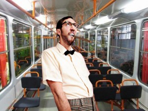

Последние дни испытывал настойчивые подозрения, что дорога на работу и обратно занимает неоправданно много бензина и времени и поэтому решил сегодня воспользоваться услугами городского общественного.
Выбирать троллейбус или автобус значит сэкономить только бензин, а вот трамвай обещал сократить и время в пути. Трамваю не страшны заторы. Трамвая как пуля. Буду скоро!
С расписанием не повезло и на остановке пришлось постоять около 15 минут. Зато потом, на дорогу, которая еще вчера заняла 30 минут ушло всего минут 10. На лицо экономия времени, а профилактика заболеваний, вызванных сидячим образом жизни на другом месте.

Люди в трамвае правда не обрадовали. Жлобят перед кондуктором — ты это должна по громкой связи говорить, пахнут чесноком и невеселы. А я был весел, вымыт, и кондуктору сказал спасибо.